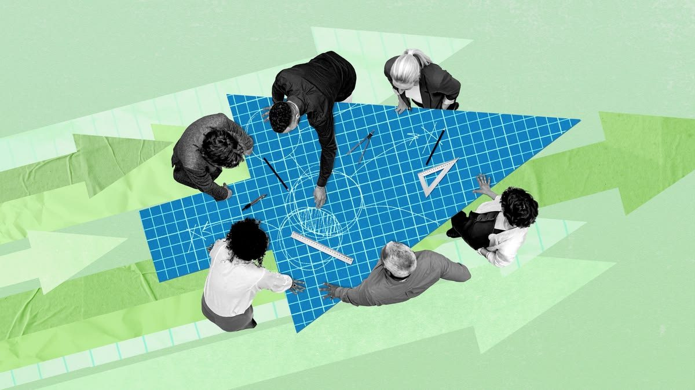
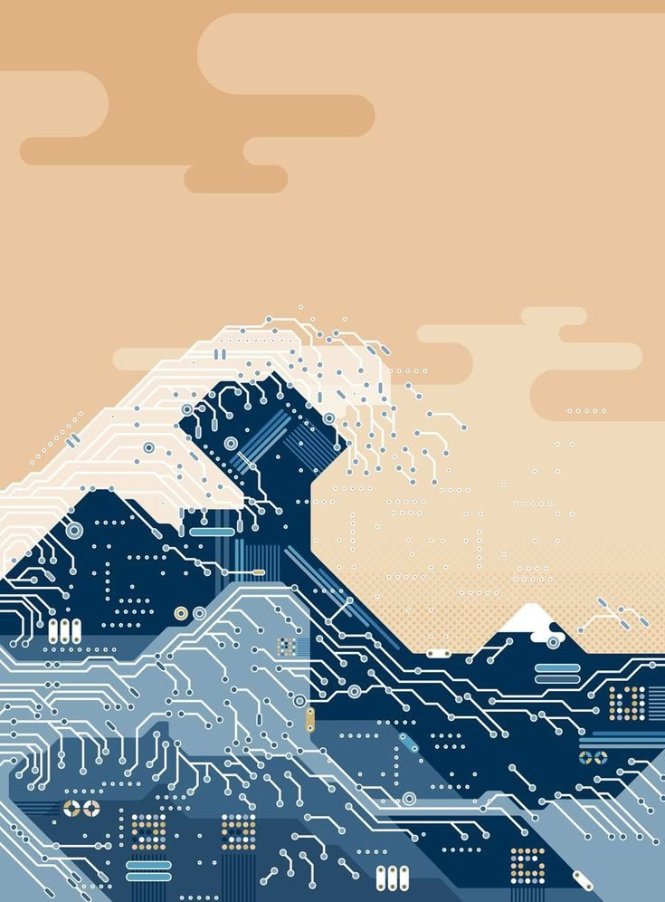
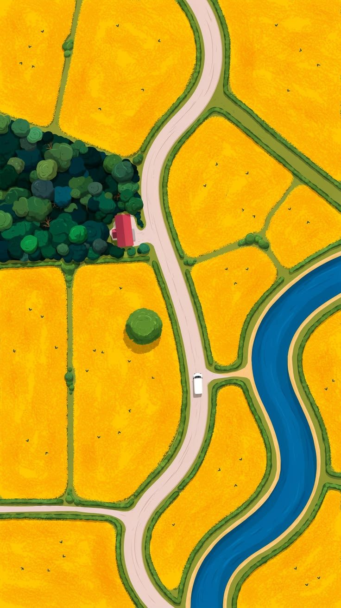
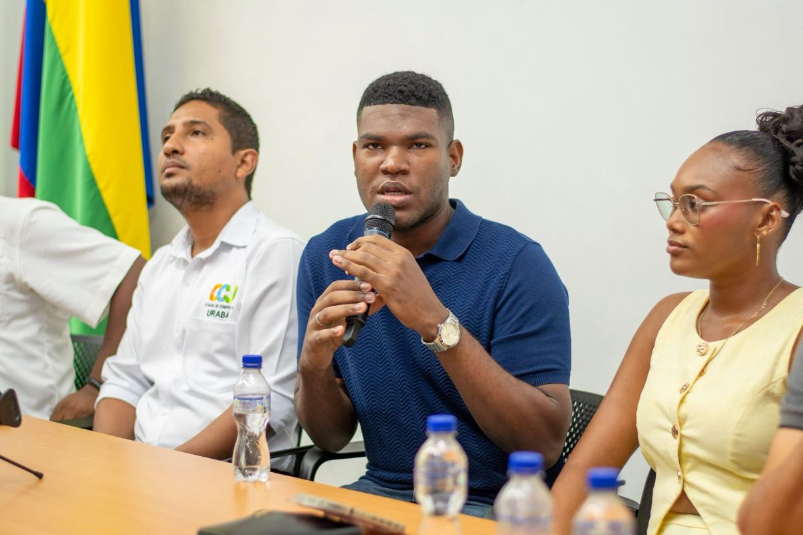
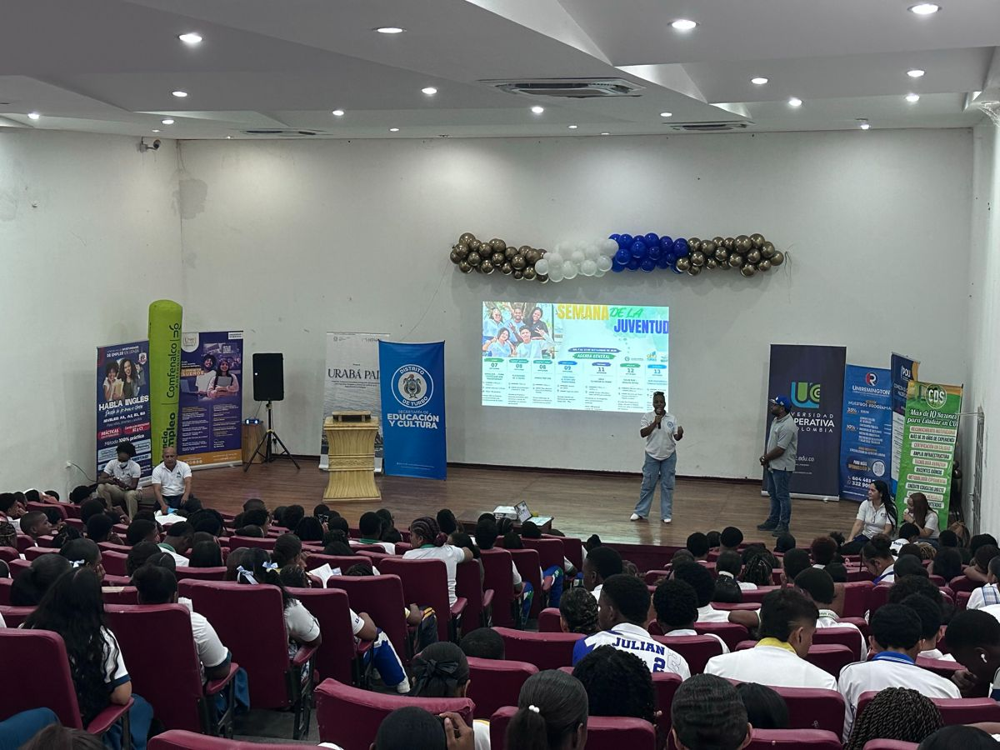
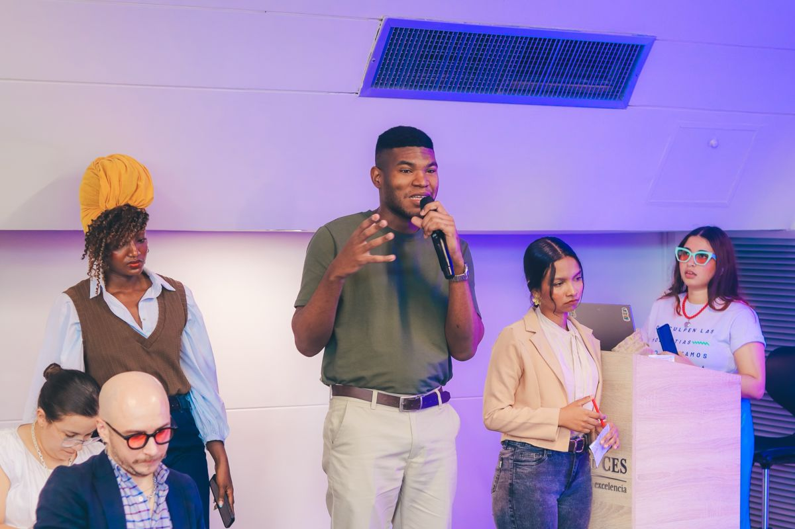

Acompañamiento al talento
Acompañamos con programas de formación rigurosos orientados a jóvenes constructores conscientes.
Rowings es una aceleradora de talento; ayudamos a los jóvenes de comunidades subrepresentadas a construir soluciones reales y carreras que impacten positivamente a través de la IA4Good.
Somos una organización sin fines de lucro que forma e impulsar el talento joven para co-construir comunidades más justas y sostenibles, mediante IA en soluciones y oportunidades reales para sus territorios.
Nuestro objetivo no es solo educar a las personas, sino lograr que construyan soluciones reales que sus comunidades puedan utilizar.
Con base en el Urabá colombiano y talento remoto en USA y España, unimos fuerzas para acelerar la economía digital de LATAM y posicionar al Sur Global dentro de esta.
Jóvenes de comunidades subrepresentadas que construyen soluciones reales para sus territorios.
Lideres destacados en política pública joven, innovación social, tech y diseño para la movilidad económica; con una visión global anclada en el desarrollo regional.

La IA ya está aquí, y las comunidades están peligrosamente despreparadas para gobernarla
IA para el Bien ya no es cuestión de acceso, sino de gobernanza, ética y valor comunitario escalable. Las instituciones que apoyan a la juventud van a una fracción de la velocidad requerida.
Únete a la comunidad
Las personas en momentos clave reescriben la historia de sus comunidades
El futuro de la IA en América Latina no está escrito. Un grupo pequeño de jóvenes constructores, en el momento justo, puede guiar la tecnología hacia mejores resultados. Los encontramos y preparamos.
Únete a la comunidad
Necesitamos urgencia y sabiduría, con Ética desde el Diseño
El tiempo es corto y desplegar IA sin gobernanza conduce a la exclusión. Actuamos rápido y con reflexión, construyendo la ética desde el diseño.
Únete a la comunidad


Acompañamos con programas de formación rigurosos orientados a jóvenes constructores conscientes.
Diseñamos y desarrollamos un kit práctico de bajo costo para escalar y prototipar soluciones.
Con Agencia Summit abrimos un diálogo horizontal entre jóvenes subrepresentados, sector público-privado, organizaciones y academia para crear soluciones reales con ética desde el diseño. Kapok, nuestra plataforma en desarrollo de financiamiento alternativo, las hace sostenibles.
Rowings es una plataforma de IA para el Bien que conecta jóvenes subrepresentados con el sector público-privado, organizaciones sociales y academia para transformar la tecnología en soluciones territoriales reales.
Nuestro objetivo es impulsar el talento joven para co-construir comunidades más justas y sostenibles, mediante soluciones reales de IA con Ética desde el Diseño.
Rowings está dirigida a jóvenes subrepresentados de América Latina interesados en construir una carrera en IA para el Bien, y a organizaciones del sector social, privado, público e instituciones educativas interesadas en impulsar y financiar soluciones que hagan a sus comunidades más sostenibles, prósperas y seguras.
Rowings es una organización sin fines de lucro aceleradora de talento para la IA beneficiosa. Gestionamos cursos, herramientas comunitarias abiertas,
Ofrecemos tres programas activos:
1. Cursos: IA para el Bien, Gobernanza y Ética desde el Diseño. Programas de formación en inteligencia artificial, tecnología, Ética desde el Diseño y cultura de innovación, con enfoque práctico y aplicado, adaptado a distintos niveles.
2. Kit de herramientas comunitarias de IA de código abierto. Un kit práctico de código abierto que desarrollamos y mantenemos para que nuestra fuerza laboral pueda construir soluciones comunitarias de bajo costo y baja barrera de idioma.
3. Plataforma de Financiamiento Alternativo + Agencia Summit. Conectamos a constructores excepcionales con rutas de financiamiento alternativo, fondos y redes globales para escalar. Agencia Summit es nuestro espacio de convergencia presencial donde articulamos a la juventud, el sector público-privado, la academia y las organizaciones sociales.
Sí. Acompañamos a jóvenes y organizaciones en el diseño, desarrollo e implementación de soluciones tecnológicas basadas en IA para el Bien y Ética desde el Diseño, a través de nuestro kit de herramientas comunitarias, programas de formación y Agencia Summit como plataforma de despliegue.
Si eres joven interesado en nuestros programas, puedes postularte a uno de nuestros programas gratuitos.
Si representas una entidad pública, una empresa, startup, organización social, institución educativa o emprendimiento social, puedes contactarnos para explorar conversaciones, programas, alianzas estratégicas o proyectos conjuntos orientados a generar valor público escalable y sostenible.
Conversemos sobre cómo asegurar que la IA funcione para las comunidades desde el desarrollo de talento, la ética por diseño y la acción territorial.
Explorar Rowings